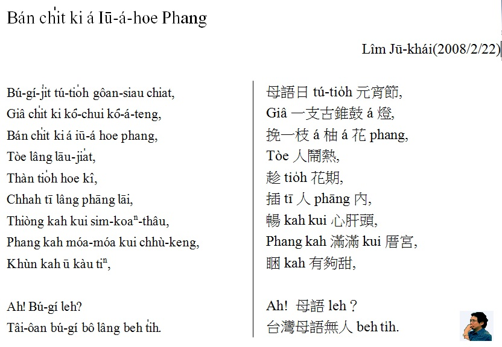
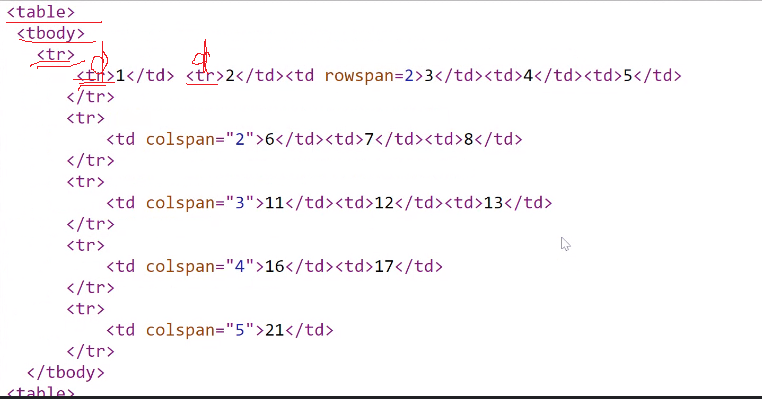

Nvu Portable & KompoZer Portable - The easy-to-use Nvu web editor
Nvu Portable & KompoZer Portable - The easy-to-use Nvu web editor
 |
| 各種瀏覽器(軟體)的icon |
| 寫在 同一個 tag element 裡， 使用 attribute : <font face="標楷體">字體 face </font> <font size="35pt">大小 size</font>字體大小如果數字，沒有單位，則只有 1 到 7； 也可以直接給尺寸單位unit： 數字後加上單位(pt, em 等等) <font color="maroon">顏色 color</font><br > in-line style 寫法：在標籤內加入 style="屬性: 值;"，多個屬性之間以分號 ; 隔開。 <標籤名稱 style="CSS屬性1: 值1; CSS屬性2: 值2;">文字內容 <font style="color:maroon; font-family:'Noto Sans TC'; font-size:15pt;"> 網頁文字內容 </font > |
| 寫在 同一個 tag element 裡， 使用 attribute : 字體 face 大小 size 顏色 color |
| Attribute 的寫法 keyword = option keyword 是屬於 tag 的某些屬性 HTML5 內定的，必須正確而且是英文半形字體； option 則是 這個 attribute 的 值，是 keyword 的可能 數值，必須人工給 每個 keyword 之前需空一格，等於 = 緊接 keyword之後。 |
一日 下晡，有一ê富有（pù-ū）ê律師 tī 半中途，看tio̍h 2 ê人 teh路邊chia̍h草。
伊感覺有 淡薄á 困擾，tō吩咐 伊ê 司機停車，落車查探。
伊問in其中一ê人，“是怎樣 lín會 tī chia chia̍h草 leh？”
Hit ê人ìn 講，“Goán 無錢thang買食物，
所以goán chiah tio̍h-ài chia̍h草。”
“若án-ni，lí ē-sái來gún 厝，我 chiah hō͘ 你 chia̍h-mi̍h。”律師án-ni 講。
“M̄-koh 我 koh有某 kap 2 ê gín-á neh in lóng tī hit pêng 樹á kha。”
“Kā in做伙 chhoā--來去。”律師講。
伊oa̍t 頭kā 另一ê人講，“你mā ē-sái tàu-tīn 來。”
Hit ê人講，“M̄-ku我mā 有某 koh 有 6 ê gín-á lioh。”
“Kā in lóng 做伙chhoā 來去。”律師回答。
雖然hit台是一台真大台ê 轎á車，in iah是費了九牛二虎ê氣力，chiah kā全部ê人載上車。
路nih，其中一人講，“先生，你真正是一ê大好人，多謝你kā gún全部lóng chhoā 來。! ”
律師回答伊講：“我mā感覺真光榮。Lín 的確會真kah-ì gún 厝，gún hia ê草足足有一米koân neh。”
b. 段落符號 <p>1 一日 下晡，有一ê富有（pù-ū）ê律師 tī 半中途，看tio̍h 2 ê人 teh路邊chia̍h草。 伊感覺有 淡薄á 困擾，tō吩咐 伊ê 司機停車，落車查探。 伊問in其中一ê人，“是怎樣 lín會 tī chia chia̍h草 leh？” Hit ê人ìn 講，“Goán 無錢thang買食物， 所以goán chiah tio̍h-ài chia̍h草。”
2 “若án-ni，lí ē-sái來gún 厝，我 chiah hō͘ 你 chia̍h-mi̍h。”律師án-ni 講。 “M̄-koh 我 koh有某 kap 2 ê gín-á neh in lóng tī hit pêng 樹á kha。” “Kā in做伙 chhoā--來去。”律師講。 伊oa̍t 頭kā 另一ê人講，“你mā ē-sái tàu-tīn 來。” Hit ê人講，“M̄-ku我mā 有某 koh 有 6 ê gín-á lioh。” “Kā in lóng 做伙chhoā 來去。”律師回答。
2.  半形空格 En Space，半形空格。en 是一個半型字元寬度的單位，寬度為 em 的一半。例如當 16px 大小的字體，半形就是 8px 的寬度。就定義上來說，一個 en 就是小寫字母 n 的寬度，大約是半個中文字寬。
3.   全形空格 Em Space，全形空格。和半形空格同概念，em 是一個全形字元的寬度，如果字體大小是 16px，一個 em 就是 16px，大約等於一個中文字寬。
4.   窄空格 窄空格，顧名思義就是寬度較窄的空格，大約是 1/6 個 em 寬。
5. ‌ 全名是 Zero Width Non Joiner，這通常是用於比較複雜的文字或特殊符號當中。首先零寬度表示這個空白不會被顯示出來，它用於分隔兩個字元排列在一起而可能發生的“連字”。也就是說，它是一個分隔元素切開兩個字元，讓它們各自產生自己相對應的文字。
6. ‍; 全名是 Zero Width Joiner。與 ZWNJ 相同的是它也是零寬度的空格，並不會被顯示在頁面上。但相反的是，它會觸發前後兩字元的連字效果。這通常是用於較複雜的語言，例如阿拉伯語或印地語等



 error:
error: 
| <video width="320" height="240" controls> <source src="奶奶的回憶篇.mp4" type="video/mp4"> <source src="movie.ogg" type="video/ogg"> Your browser does not support the video tag. </video> |
| <audio controls> <source src="horse.ogg" type="audio/ogg"> <source src="08 -相思燈.mp3" type="audio/mpeg"> Your browser does not support the audio tag. </audio> |
| <iframe width="560" height="315" src="https://www.youtube.com/embed/ZbwBVWnonzA" title="YouTube video player" frameborder="0" allow="accelerometer; autoplay; clipboard-write; encrypted-media; gyroscope; picture-in-picture" allowfullscreen></iframe> |